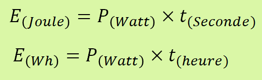

La fonction principale d’un système pluri technologique est d’apporter une valeur ajoutée à un flux de matières, de données, et/ou d’énergies. Pour chacun de ces trois flux, un ensemble de procédés élémentaires de stockage, de transport et de conversion, est mis en œuvre pour apporter la valeur ajoutée au flux entrant. Il est généralement possible de distinguer deux parties dans un système, la chaîne d’information qui agit sur les flux de données et la chaîne d’énergie qui agit sur les flux de matières et d’énergies.
Retour en haut de la pageElle transforme l’énergie d’entrée pour obtenir l’action de sortie désirée conforme aux exigences du CdCF, en respectant les ordres transmis par la chaîne d’information.
Les énergies possibles sont:
L'énergie est une grandeur physique qui dépend de la puissance (P en watt) utilisée durant un temps (t en seconde ou en heure). Elle est exprimée en Joules (J) ou en Watt Heure (Wh).

Une masse « m » subissant une accélération « g » et pouvant réaliser un déplacement « H » dispose d’une énergie potentielle « E ».
Une masse « m » se déplaçant dans un mouvement de translation à une vitesse « v » dispose d’une énergie cinétique « E ».
La chaleur est la quantité d’énergie échangée par un corps qui passe d'une température T1 à une température T2.
Retour en haut de la page